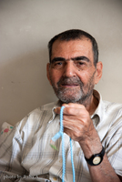

|
|

درگذشت پدر محبوبه کرمی
جمعه25 آذر 1390
تغییر برای برابری: امروز جمعه, بیست و پنجم آذر ماه, پدر محبوبه کرمی دوست و همراه زندانی مان, در بیمارستان چمران تهران درگذشت.
به گفته برادر محبوبه, آقای کرمی پس از جراحی انسداد روده دچار مشکلات حاد تنفسی شده و در بخش آی سی یو بیمارستان چمران بستری بودند.
محبوبه کرمی که از بیست و پنجم اردیبهشت ماه امسال در زندان اوین به سر می برد, چهارشنبه شب تحت الحفظ به بیمارستان آمد و ساعتی با پدرش ملاقات کرد. این در حالیست که برادرش از چندی پیش تلاش می کرد از طریق ارسال پرونده پزشکی محبوبه به مراجع قضایی برایش درخواست مرخصی کند تا هم مشکلات جسمی خود او بهبود یابد و هم زمانی را با پدر بیمارش بگذراند. اما کمیسیون پزشکی سازمان زندانها با این درخواست مخالفت کردند.
محبوبه مادرش را نیز در فروردین سال 88 و در حالیکه زندانی بود از دست داد و فرصت بودن با مادر بیمارش را هم نیافت.
سایت تغییر برای برابری این اتفاق دردآور را به محبوبه کرمی, خانواده اش و کلیه دوستان و یارانش در جنبش زنان تسلیت می گوید. امیدواریم محبوبه از زندان آزاد شود, غم و اندوهش را با خانواده و دوستانش قسمت کند تا شاید اندکی تسلا یابد.